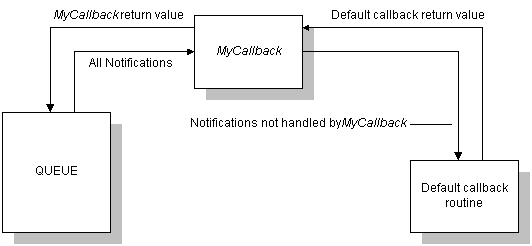

In addition to using the default queue callback, you can write a custom callback routine. This function must have the same form as FileCallback. This is useful if you need a callback routine to handle a notification in a manner other than that provided by the default queue callback routine.
If only a small portion of the default queue callback routine's behavior needs to be changed, you can create a custom callback routine to filter the notifications, handling only those that require special behavior and calling SetupDefaultQueueCallback for the others.
For example, if you wanted to custom-handle file delete errors, you could create a custom callback function, MyCallback. This function would intercept and process SPFILENOTIFY_DELETEERROR notifications, and call the default queue callback function for all other notifications. MyCallback returns a value for the delete error notifications. For all other notifications, MyCallback passes whatever value the default queue callback routine returned to the queue.
This flow of control is illustrated in the following diagram.

[!IMPORTANT] If the custom callback function calls the default queue callback routine, it must pass the void pointer returned by SetupInitDefaultQueueCallback or SetupInitDefaultQueueCallbackEx to the default callback routine.
Â
Â
Â